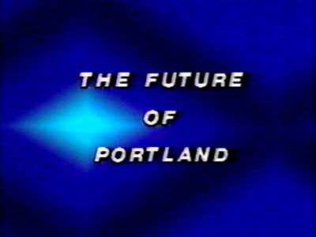
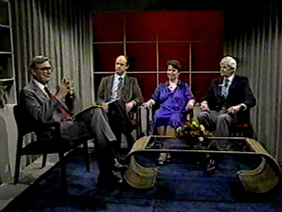
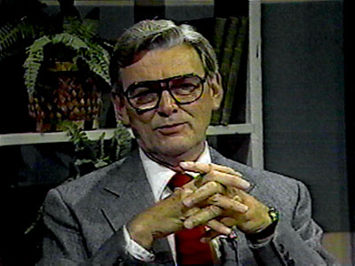

Columbia Crossroads
September 1970 - May 21,
1983
 |
 |
|
Program
slide,
used
in
station
identifications. |
|
A
long-running
public affairs
program
which
discussed
a
different
topic
of
local
interest
with
each
program.
Over
the
years,
many
of
KPTV's
on-air
personalities
hosted
the
show,
which
ran
in
both
morning
and
evening
time-slots
each
weekend.

Each
program
discussed
a
different
topic.
This
one,
from
1983,
covered
"The
Future
of
Portland."
|
|

A
panel
of
opinionated
experts
has
gathered,
as
the
show
opens.
|

Host
Gene
Brendler,
in
1983,
ponders
the
topic
at
hand.
|
SELECTED PROGRAM LISTINGS
January 10, 1971
"Is It Legal?" A panel of lawyers answers questions telephoned
in by viewers on personal liability, domestic relations, criminal law
and other phases of law interpretation. Moderator: Gene Brendler.
[LIVE]
| Columbia
Crossroads BROADCAST
HISTORY |
OCT
1970 - : SUN 9:10PM-10:00PM
FEB 1971 - : SUN 9:00PM-9:30PM
DEC 1971 - : SUN 9:00PM-10:00PM
SEP 1973 - : SAT 8:00AM-9:00AM |

  
This
page
last
updated
on
August 16, 2025 |